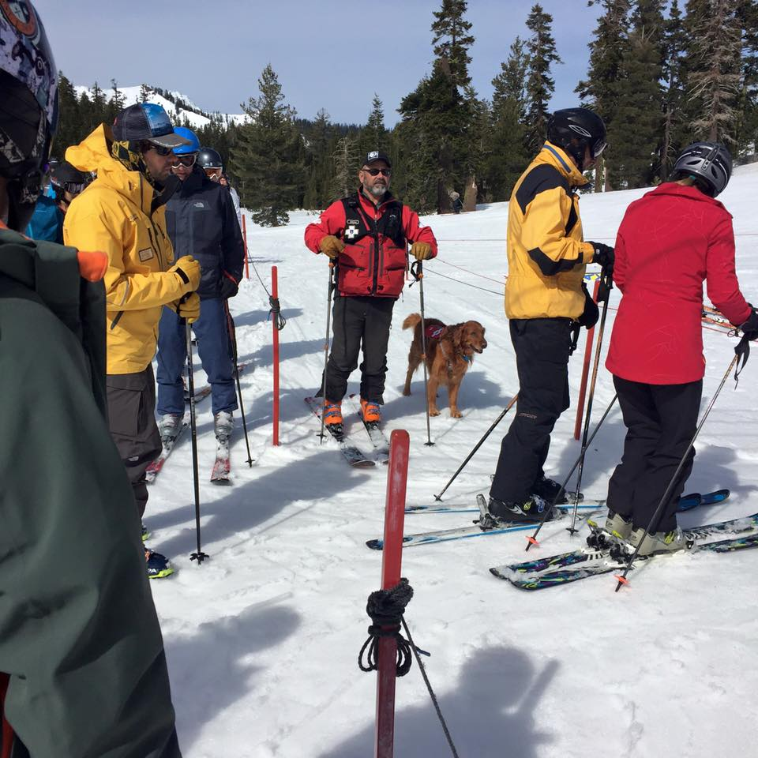

In north central Maine, Sunday River sits as the sixth largest mountains in New England and one of the few northeast offerings on the M.A.X. Pass. With some of the best snow making technology in the northeast and upgraded lifts, it is a perfect for a ski weekend getaway. Fair warning, northern Maine can bring the cold so pack the woolies and be prepared for some classic northeast ice. Six miles away is Bethel- a quintessential New England town with a historic village of shops and restaurants.
Squaw Valley proudly hosted the 1960 Olympics and still displays the iconic Olympic rings with a symbolic Olympic torch burning at the entrance to the resort. Breathtaking scenery and sunny skis provide the motivation to tackle the 170 trails at Squaw. Views of Lake Tahoe compel skiers and riders alike to the summit for photos. If you are looking for fast skiing and zippy turns then add Squaw Valley to your list. Lodging at the base ease the planning logistics and the village has every thing you might need for a ski getaway with many winter activities after the trails close. Don't forget to visit Squaw Valley's sister resort Alpine Meadows minutes away.

Alpine Meadows located on the north side of Lake Tahoe and a sister resort to Squaw Valley is a complete gem. A favorite among locals with a family feel, Alpine caters to intermediate and advanced skiers. With 7 bowls and 2400 skiable acres the terrain caters to those who like steep groomers to the more adventurous who want to make fresh turns. With a vertical drop of 1802 feet, avalanches are a risk and ski patrol keeps a close watch.
Jackson Hole is nestled in the Grand Teton mountains next to Yellowstone National Park in western Wyoming. The quaint airport is a short drive to Teton Village where some of the most iconic skiing in North America exists. The legendary Corbets Couloir is for those who want to take a prominent line on the mountain. With acres upon acres of terrain that mostly caters to intermediate and expert skiers, this mountain is better suited for skiers with a few years of experience under their belt. Though, in a few days on the trails at Jackson a novice skier will feel quite accomplished!
Big Sky is aptly named and a complete joy of a ski resort. 5800 acres offers all skiers the choice to stay in their comfort zone or the opportunity to explore new terrain. Take the tram to the summit for a view as far as the eye can see. When there's fresh powder there are turns for days. After a full day on the mountain you can try out the local Beehive Basin Brewery for a tasting or a growler to go. While a truly enormous mountain Big Sky still has a small-town local feel. Big Sky will not disappoint but pack some warm layers for cold mornings and late afternoons!
Steamboat Springs is about three hours north of Denver in an old mining town. The resort itself is compromised of a complete mountain range with lots of groomers or gladed areas for those that like popping in and of the trees. Champagne Powder was coined at Steamboat and is perhaps the best snow in which you'll ever make. After a day on the slopes, you can enjoy a drinks and dinner at one of the many bars and restaurants. And, don't forget to try the actual hot springs near the city center!
Winter Park serves up some of the most well-groomed trails on any mountain and is just 90 minutes from Denver. You can head straight to the summit for some incredible views of the Rocky Mountains and make fresh turns or pick a groomer. You can weave through some beautiful trees on a trail or venture off on your own - all within bounds of course. Winter Park also has some great on mountain dining and concession. If you are in the area, this is not a mountain to skip!